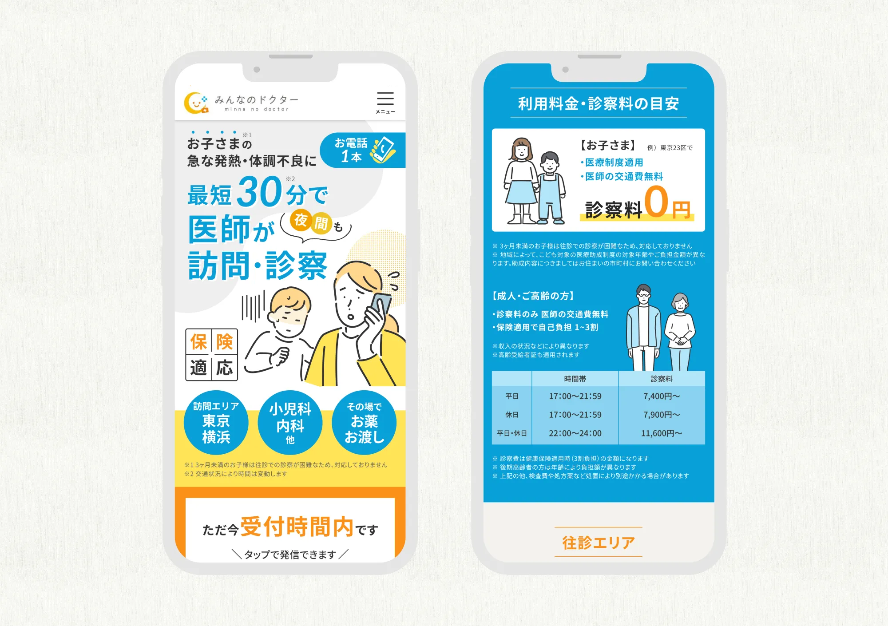
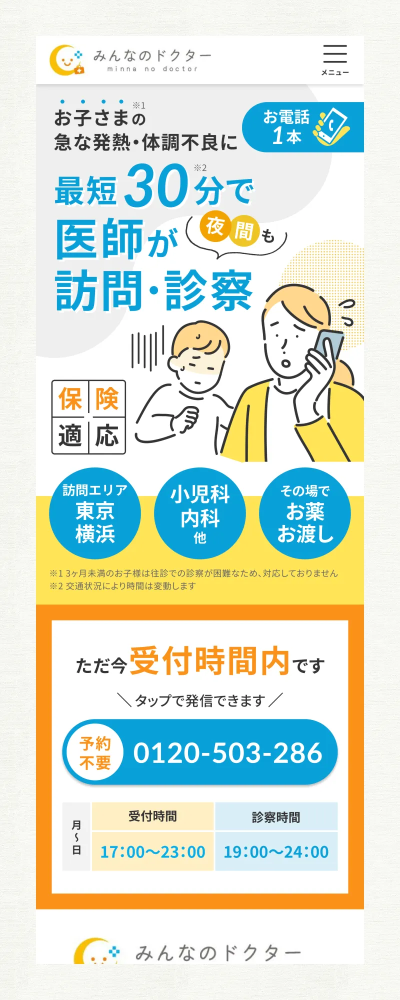
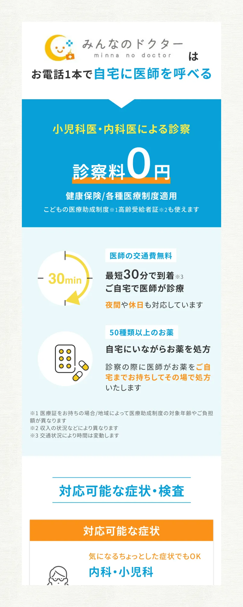
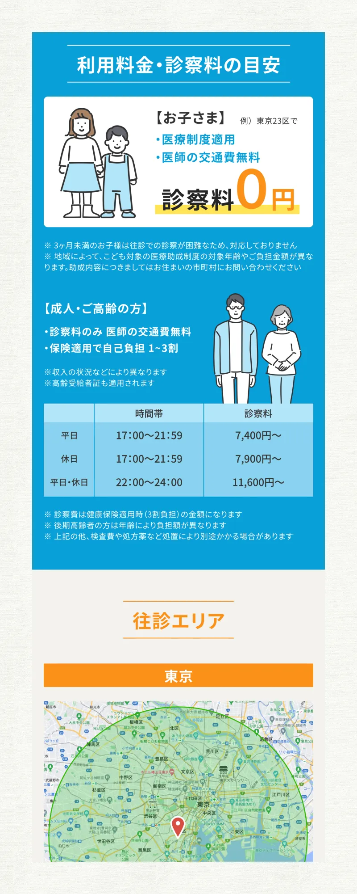
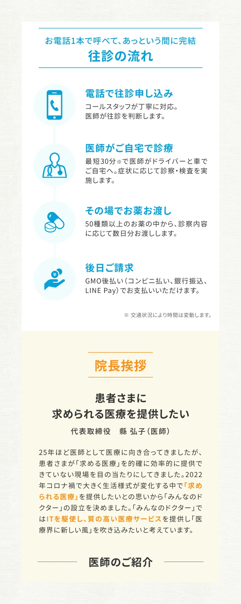

往診＆遠隔診療サービス みんなのドクター LP
不安を安心に変える
不安を安心に変える
誠実さとスピード感
PROBLEM / 課題
お子さまの急発熱や夜間の体調不良に直面したユーザーは、「すぐに診てもらえるのか」「いくらかかるのか」という疑問が解消されないと、サービスの利用を躊躇してしまいます。緊迫した状況でも直感的に情報を理解でき、一刻も早く安心を提供するためのインターフェースが求められました。
SOLUTION / 解決
「最短30分で訪問」という最大の利点をファーストビューで強調し、不安を即座に払拭。緊急時でも直感的に理解できるよう、情報をブロック単位で整理したレイアウトを採用しました。懸念点となる診察料もイラストを交えて明快に提示。知りたい情報へ迷わず辿り着ける設計により、スムーズな受診予約へと繋げました。
LP DESIGN



